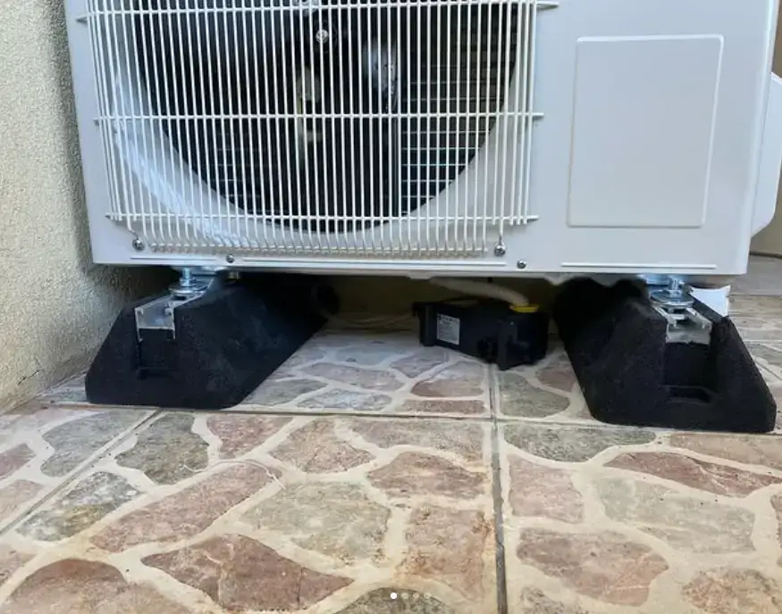

Vous cherchez le prix d'une climatisation réversible à Marseille avant de vous lancer ? Bon réflexe : entre un simple mono-split et une installation complète pour toute la maison, la facture varie du simple au quadruple. Le réversible a un vrai atout ici : il rafraîchit pendant les fortes chaleurs d'été et chauffe en appoint pendant les hivers doux. Dans ce guide, on détaille les fourchettes de prix 2026, les facteurs qui font grimper le devis, et nos conseils d'artisan pour installer sereinement.

- Le prix d'une climatisation réversible posée
- Ce qui fait varier le prix
- Mono-split ou multi-split ?
- Comment bien dimensionner sa clim
- Quel type d'unité intérieure ?
- Pourquoi le réversible est idéal à Marseille
- Aides financières : ce qu'il faut savoir
- Entretien et consommation
- Combien de temps pour l'installation ?
- Nos conseils d'artisan
- Foire aux questions
Le prix d'une climatisation réversible posée
Voici des fourchettes indicatives, pose comprise, constatées à Marseille et dans les Bouches-du-Rhône pour du matériel de qualité courante. Seul un devis après visite donne un prix juste, car tout dépend de la configuration de votre logement.
Fourchettes de prix selon la configuration
| Configuration | Pièces climatisées | Prix posé (fourchette) |
|---|---|---|
| Mono-split | 1 pièce | 1 500 – 2 500 € |
| Bi-split | 2 pièces | 3 000 – 4 500 € |
| Tri-split | 3 pièces | 4 000 – 6 000 € |
| Multi-split / gainable | 4 pièces et + | 6 000 – 10 000 € |
Ce que comprend (ou pas) le devis
Un prix affiché ne veut rien dire sans le détail. Vérifiez toujours ce qui est inclus :
- La fourniture du matériel (unité intérieure, groupe extérieur, liaisons frigorifiques).
- La pose complète : fixation, perçage, raccordements, mise en service.
- L'évacuation des condensats et les éventuels supports du groupe extérieur.
- La mise en service et les réglages, souvent oubliés des devis low-cost.
Ce qui fait varier le prix
À logement égal, deux devis peuvent différer sensiblement. Voici les principaux leviers.
La puissance et la surface à climatiser
- Plus la surface (et le volume) est grande, plus la puissance nécessaire est élevée.
- Une pièce très exposée au sud à Marseille demande une puissance supérieure pour le même volume.
Mono-split ou multi-split
- Le mono-split (1 unité intérieure + 1 groupe) est le plus économique.
- Le multi-split relie plusieurs unités à un seul groupe extérieur : plus cher, mais un seul bloc en façade.
La marque et le niveau de gamme
- Les marques reconnues (silence, fiabilité, garantie) coûtent plus cher à l'achat mais durent.
- Les options (Wi-Fi, filtration, silence renforcé) font monter la note.

Mono-split ou multi-split : que choisir ?
C'est l'arbitrage clé. En résumé :
| Critère | Mono-split | Multi-split |
|---|---|---|
| Pièces | 1 seule | Plusieurs (2 à 5) |
| Prix | € (le plus abordable) | €€ à €€€ |
| Groupes extérieurs | 1 | 1 seul pour tout |
| Idéal pour | Une chambre, un séjour | Climatiser tout le logement |
Le bon choix dépend de vos besoins réels et de votre façade. On regarde ça ensemble lors de la visite : voyez notre service d'installation de climatisation réversible.
Comment bien dimensionner votre climatisation
C'est LE point technique qui fait la différence entre une clim efficace et une déception. Une puissance mal choisie gâche le confort… et l'argent.
La puissance se calcule selon le volume, pas juste la surface
À titre indicatif, on part souvent d'environ 100 watts par m² pour une pièce standard. Mais ce n'est qu'une base : le calcul juste tient compte de plusieurs éléments.
- La hauteur sous plafond (on raisonne en volume, pas seulement en surface au sol).
- L'exposition : une pièce plein sud à Marseille accumule beaucoup plus de chaleur.
- La qualité de l'isolation et la surface vitrée de la pièce.
- Le nombre d'occupants et les appareils qui dégagent de la chaleur (cuisine, informatique).
Sous-dimensionner ou surdimensionner : deux erreurs coûteuses
- Une clim trop faible tourne à plein régime en permanence, n'atteint jamais la bonne température, s'use vite et consomme trop.
- Une clim trop puissante coûte plus cher à l'achat, fait des cycles courts et régule moins bien l'humidité.
- Le bon dimensionnement, c'est justement le rôle de l'artisan lors de la visite : ni trop, ni trop peu.
Quel type d'unité intérieure choisir ?
Au-delà de la puissance, l'unité intérieure existe en plusieurs formats, à choisir selon la pièce et vos contraintes.
- Murale : la plus courante et la plus abordable, fixée en haut d'un mur. Elle convient à la majorité des pièces.
- Console : posée en bas du mur, façon radiateur. Pratique quand on manque de place en hauteur.
- Cassette : encastrée au plafond, discrète, plutôt pour les grandes pièces ou les commerces.
- Gainable : totalement invisible, l'air est diffusé par des grilles. Le plus élégant… et le plus cher.
Pourquoi le réversible est idéal à Marseille
Le climat marseillais est presque taillé pour la climatisation réversible.
Un confort sur toute l'année
- L'été, elle rafraîchit efficacement pendant les épisodes de forte chaleur.
- L'hiver, doux à Marseille, elle sert de chauffage d'appoint économique.
- Un seul appareil pour deux usages : un vrai bon calcul sur la durée.
Un artisan expérimenté, ça compte
- Une pose mal réalisée (liaisons, étanchéité, évacuation) réduit les performances et la durée de vie.
- Chez M13, José cumule 8 ans d'expérience en climatisation en plus de la menuiserie. En savoir plus sur l'artisan.
Aides financières : ce qu'il faut savoir
Soyons honnêtes sur ce point, car beaucoup entretiennent le flou pour faire signer.
- La climatisation réversible est une pompe à chaleur air-air. À ce titre, elle n'est pas éligible à MaPrimeRénov', contrairement à d'autres systèmes de chauffage.
- Quelques dispositifs (certaines primes énergie / CEE) peuvent exister sous conditions, généralement réservés aux installateurs certifiés RGE.
- Notre conseil : raisonnez sur le prix réel du devis plutôt que sur des aides hypothétiques. On vous dit clairement ce à quoi vous avez droit, sans fausse promesse.
Le vrai avantage est ailleurs : à l'usage, une clim réversible reste l'un des systèmes les plus économes en énergie, ce qui allège la facture sur la durée.
Entretien et consommation
- Filtres : un nettoyage régulier maintient les performances et un air sain.
- Entretien annuel recommandé (obligatoire au-delà d'une certaine puissance de fluide).
- Consommation : le réversible est parmi les modes de chauffage/rafraîchissement les plus efficaces énergétiquement.
Combien de temps pour l'installation ?
- Un mono-split s'installe généralement en une demi-journée à une journée.
- Une installation multi-split (plusieurs pièces) prend le plus souvent un à deux jours, selon l'accès au logement, la distance entre les unités et le passage des liaisons.
- On fixe la date ensemble après validation du devis, et le chantier est laissé propre en fin d'intervention.
Envie d'un prix précis pour votre climatisation ?
Je viens évaluer votre logement et je vous remets un devis clair et gratuit sous 48 h, à Marseille et dans les Bouches-du-Rhône et le Var.
Demander mon devis gratuitNos conseils d'artisan pour bien acheter
- Exigez un devis détaillé (matériel, pose, mise en service) plutôt qu'un prix global flou.
- Méfiez-vous des prix trop bas : souvent, la mise en service ou l'évacuation n'est pas comprise.
- Dimensionnez la puissance selon la pièce, ni trop faible (inefficace), ni trop forte (surcoût inutile).
- Privilégiez un installateur local et expérimenté, joignable pour l'entretien et le suivi.
Foire aux questions
Quel est le prix d'une climatisation réversible à Marseille ?
Pour un mono-split (une pièce), comptez en moyenne 1 500 à 2 500 € posé. Une installation multi-split pour plusieurs pièces se situe généralement entre 3 000 et 8 000 €, selon la puissance, le nombre d'unités et la marque.
La climatisation réversible chauffe-t-elle vraiment en hiver ?
Oui, elle produit du chaud comme du froid. À Marseille, avec des hivers doux, c'est un chauffage d'appoint très économique, souvent plus efficace qu'un radiateur électrique classique.
Mono-split ou multi-split ?
Le mono-split climatise une seule pièce à moindre coût. Le multi-split relie plusieurs unités intérieures à un seul groupe extérieur : idéal pour climatiser tout un logement avec un seul bloc en façade.
Faut-il entretenir sa climatisation ?
Oui. Un nettoyage régulier des filtres et un entretien annuel garantissent performance, air sain et longévité. Au-delà d'une certaine puissance, l'entretien par un professionnel est même obligatoire.
En résumé
À Marseille, une climatisation réversible coûte le plus souvent entre 1 500 € (une pièce) et 8 000 € (toute la maison), pose comprise. Le vrai réflexe : un devis détaillé et une puissance bien dimensionnée par un artisan expérimenté. Vous avez un projet ? Demandez votre devis gratuit, on évalue votre logement et je vous conseille la bonne configuration.